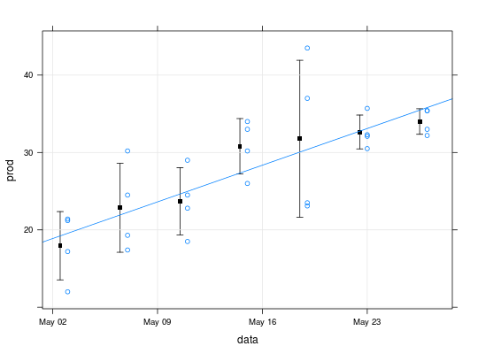

Dados de um experimento conduzido em delineamento de blocos ao acaso onde foi mensurada a produção de ruibarbos para enlatamento, considerando diferentes datas de colheita.
Um data.frame de 28 linhas e 3 colunas, em que
dataDate foi considerado o ano 1983
(Date de publicação do livro que referencia os dados).blocoprodDEMÉTRIO; ZOCCHI (2011), Tabela 2.12 pág. 66-67.
data(DemetrioTb2.12)#> Warning: data set ‘DemetrioTb2.12’ not foundstr(DemetrioTb2.12)#> 'data.frame': 28 obs. of 3 variables: #> $ data : Date, format: "1983-05-03" "1983-05-07" ... #> $ bloco: Factor w/ 4 levels "1","2","3","4": 1 1 1 1 1 1 1 2 2 2 ... #> $ prod : num 21.2 19.3 22.8 26 43.5 32.1 33 21.4 17.4 29 ...library(lattice) # Estatísticas descritivas with(DemetrioTb2.12, tapply(prod, data, summary))#> $`1983-05-03` #> Min. 1st Qu. Median Mean 3rd Qu. Max. #> 12.00 15.90 19.20 17.95 21.25 21.40 #> #> $`1983-05-07` #> Min. 1st Qu. Median Mean 3rd Qu. Max. #> 17.40 18.83 21.90 22.85 25.92 30.20 #> #> $`1983-05-11` #> Min. 1st Qu. Median Mean 3rd Qu. Max. #> 18.50 21.72 23.65 23.70 25.62 29.00 #> #> $`1983-05-15` #> Min. 1st Qu. Median Mean 3rd Qu. Max. #> 26.00 29.15 31.60 30.80 33.25 34.00 #> #> $`1983-05-19` #> Min. 1st Qu. Median Mean 3rd Qu. Max. #> 23.10 23.40 30.25 31.78 38.62 43.50 #> #> $`1983-05-23` #> Min. 1st Qu. Median Mean 3rd Qu. Max. #> 30.50 31.70 32.20 32.65 33.15 35.70 #> #> $`1983-05-27` #> Min. 1st Qu. Median Mean 3rd Qu. Max. #> 32.2 32.8 34.2 34.0 35.4 35.4 #>with(DemetrioTb2.12, { mu <<- aggregate(prod, list(data), mean) des <<- aggregate(prod, list(data), sd) }) xyplot(prod ~ data, data = DemetrioTb2.12, type = c("p", "r"), grid = TRUE, panel = function(x, y, ...) { panel.points(x = mu$G - 0.5, y = mu$x, pch = 15, col = 1) panel.arrows(x0 = mu$G - 0.5, y0 = mu$x - des$x, x1 = mu$G - 0.5, y1 = mu$x + des$x, code = 3, length = 0.05, angle = 90) panel.xyplot(x, y, ...) })